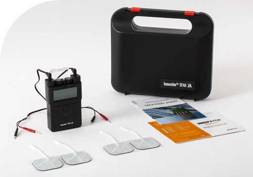
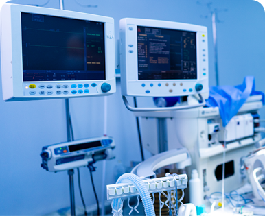

건강한 내일을 만드는 기업
바이오프로테크

2026 제 8회
강원특별자치도 일자리대상
-
설립일
2017년 04월 10일
-
매출액(백만원)
00 억원
-
사원수
00 명
-
자본금(백만원)
00 억원
Company overview
㈜바이오프로테크는 2000년 설립된 의료기기 전문기업으로, 강원도 원주 동화첨단의료기기산업단지에 본사·공장·연구소를 두고 병원 수술실에서 사용되는 1회용 의료 소모품을 생산하고 있습니다.
심전도 센서 등 의료용 센서류부터 수술 중 발생하는 유해 연기를 제거해 의료진과 환자의 건강을 지키는 ＇수술실 연기제거시스템＇까지 폭넓은 제품 라인업을 보유하고 있으며, 수술실 연기제거 분야에서는 세계 3대 제조사로 평가받고 있습니다.
FDA, CE, ISO 13485 등 글로벌 인증을 완료하고 미국 3대 GPO(Vizient, HPG, Advantage Trust)와 공급계약을 체결하였으며, McKesson, Cardinal Health, Baxter 등 글로벌 기업에 제품을 공급하며 2023년 수출 2,000만불탑을 수상하였습니다.
중국(연태)·미국 현지법인을 운영하는 생산·영업 이원화 시스템을 갖추고 있으며, 글로벌 시장을 대상으로 안정적인 생산·공급 체계를 구축해 지속적인 성장을 이어가고 있습니다.

기업연혁

2021
-
00국방 연구개발 장려금 금상 수상 무기체계 개조개발 사업자 선정 및 협약 체결 잠수함용 전자전 ES(전자지원) 장비 국산화 개발 인천테크노파크 확대산업기술단지 사업자 최종 선정 서울시 공공자전거/QR단말기 수주 L-SAM 다기능레이다 시제(전원/제어보드) 수주
-
00산업기술진흥 유공포상 국무총리상 수상 경기도 유망중소기업 선정
2021
-
00국방 연구개발 장려금 금상 수상 무기체계 개조개발 사업자 선정 및 협약 체결 잠수함용 전자전 ES(전자지원) 장비 국산화 개발 인천테크노파크 확대산업기술단지 사업자 최종 선정 서울시 공공자전거/QR단말기 수주 L-SAM 다기능레이다 시제(전원/제어보드) 수주
-
00산업기술진흥 유공포상 국무총리상 수상 경기도 유망중소기업 선정
2021
-
00국방 연구개발 장려금 금상 수상 무기체계 개조개발 사업자 선정 및 협약 체결 잠수함용 전자전 ES(전자지원) 장비 국산화 개발 인천테크노파크 확대산업기술단지 사업자 최종 선정 서울시 공공자전거/QR단말기 수주 L-SAM 다기능레이다 시제(전원/제어보드) 수주
-
00산업기술진흥 유공포상 국무총리상 수상 경기도 유망중소기업 선정

비전
세계 10대 의료 소모품 제조사 및
세계 3대 수술실 연기제거시스템 제조사
세계 3대 수술실 연기제거시스템 제조사
슬로건
건강한 내일을 만드는 기업!

미션
생명을 다루는 수술 현장에 꼭 필요한 제품으로
의료진과 환자의 건강한 내일에 기여합니다
의료진과 환자의 건강한 내일에 기여합니다
핵심가치
- 1. 품질제일
- 사람의 생명과 직결되는 제품인 만큼 글로벌 인증(FDA, CE, ISO 13485) 수준의 품질을 최우선으로 함
- 2. 기술혁신
- 하이드로젤 자체 개발 등 핵심 소재·제품 기술의 끊임없는 혁신 추구
- 3. 사람중심
- '좋은 회사가 먼저 있어야 좋은 사람이 모인다'는 믿음으로 직원이 자부심을 갖고 일하는 회사를 지향
- 4. 글로벌
- 미국·유럽·중국 등 세계 시장에서 인정받는 강원도 대표 의료기기 기업으로 성장
전략과제
- 1. 글로벌 시장 확대
- 미국 GPO·병원그룹 대상 수술실 연기제거시스템 공급 확대, 유럽 MDR 전환 대응
- 2. 기술·제품 혁신
- 자체 개발 하이드로젤의 신규 응용 분야(DDS, Wound Dressing 등) 확장
- 3. 일하기 좋은 기업
- 주 4.5일제 도입 준비(원주 의료기기 업계 최초) 등 직원 중심 근무환경 조성
Type
of talent
인재상
- 적극적으로 실천하는 빅텍인
- 끊임없이 자기계발을 하는 빅텍인
- 세계최고를 목표로 끊임없이 도전하는 빅텍인
- 침착한 판단과 결과에 책임지는 빅텍인
BUSINESS주요사업영역
PRODUCT주요상품영역
finance기업 재무정보
재무평가 요약
자본금
매출액
당기순이익
동종업종 내 순위
9위
기업평가등급
BBB-
기업인증현황
이노비즈 인증기업, 경기도가족친화인증기업
규모형태
상위33%
성장성
상위25%
수익성
상위57%
안정성
상위20%
Welfare(주)바이오프로테크만의 복지
인터뷰
직원들의 성장을 위해 회사가 지원 혹은 노력하는 부분은 무엇인가요?
먼저 직원에게 성장기회를 제공하기 위해 직무순환제도를 실시하고 있습니다. 직무순환제도는 회사 차원에서 이뤄지는 전략적 직무순환과 직원의 희망직무로 변경하는 자발적 직무순환이 있습니다.
직무순환제도를 통해 회사는 인재발굴이 가능해지며, 직원들은 자신의 성장을 위한 다양한 기회를 부여받을 수 있습니다.
직원의 성장을 위해 다양한 교육기회도 제공하고 있습니다.
직무에 필요한 역량교육을 비롯하여, 어학교육, 인성교육 등 직원의 다양한 역량강화를 지원하고 있습니다.
또한, 직원이 스스로 성장하고 역량을 발휘할 있도록 몰입할 수 있는 근무환경을 조성하고자 노력 중입니다.
이를 위해 근무환경 개선방안을 지속적으로 시행하고 있으며, 직원들의 다양한 의견제언을 통해 함께 더 나은 근무환경을 만들고 있습니다.
직무순환제도를 통해 회사는 인재발굴이 가능해지며, 직원들은 자신의 성장을 위한 다양한 기회를 부여받을 수 있습니다.
직원의 성장을 위해 다양한 교육기회도 제공하고 있습니다.
직무에 필요한 역량교육을 비롯하여, 어학교육, 인성교육 등 직원의 다양한 역량강화를 지원하고 있습니다.
또한, 직원이 스스로 성장하고 역량을 발휘할 있도록 몰입할 수 있는 근무환경을 조성하고자 노력 중입니다.
이를 위해 근무환경 개선방안을 지속적으로 시행하고 있으며, 직원들의 다양한 의견제언을 통해 함께 더 나은 근무환경을 만들고 있습니다.
회사의 연차제도는 어떻게 되어있나요? 장기근속자 혜택이나 여름휴가 별도 제공 등 추가적인 연차 제도가 있나요?
기본적인 연차제도를 운영하고 있으며 연차제도와 함께 추가적인 휴가제도를 운영하고 있습니다.
1) 장기근속 직원에게 장기근속 휴가를 제공하고 있으며, 근속기간에 따라 최대 9박10일까지 휴가를 제공하고 있습니다.
2) 하계기간에는 3박4일의 하계휴가를 지급하고 있습니다. 하계 휴가에 개인연차를 자유롭게 붙여서 사용하는 것도 가능합니다.
3) 출장자에 대한 보상휴가 제도도 운영 중입니다. 1박2일 이상의 국내출장자 중 연간 40박 이상 출장자에게는 최대 3박4일까지 보상휴가를 제공하고 있습니다.
4) 경조 발생시 경조휴가도 제공하고 있으며, 경조사에 따라 최대 5일의 휴가를 제공하고 있습니다.
1) 장기근속 직원에게 장기근속 휴가를 제공하고 있으며, 근속기간에 따라 최대 9박10일까지 휴가를 제공하고 있습니다.
2) 하계기간에는 3박4일의 하계휴가를 지급하고 있습니다. 하계 휴가에 개인연차를 자유롭게 붙여서 사용하는 것도 가능합니다.
3) 출장자에 대한 보상휴가 제도도 운영 중입니다. 1박2일 이상의 국내출장자 중 연간 40박 이상 출장자에게는 최대 3박4일까지 보상휴가를 제공하고 있습니다.
4) 경조 발생시 경조휴가도 제공하고 있으며, 경조사에 따라 최대 5일의 휴가를 제공하고 있습니다.
복장이나 헤어스타일의 자율성은 어느 정도인지요?
복장이나 헤어스타일에 대해 특별히 제재하고 있지 않습니다.
직원의 자율성을 최대한 보장하고 있으며, 직원들 또한 과하지 않는 범위에서 자신의 개성을 표현하고 있습니다.
또한. 혹서기에는 업무효율 향상 및 건강한 근무환경 조성을 위하여 반바지 등 쿨비즈 복장 착용을 회사 차원에서 적극 권장하고 있습니다.
직원의 자율성을 최대한 보장하고 있으며, 직원들 또한 과하지 않는 범위에서 자신의 개성을 표현하고 있습니다.
또한. 혹서기에는 업무효율 향상 및 건강한 근무환경 조성을 위하여 반바지 등 쿨비즈 복장 착용을 회사 차원에서 적극 권장하고 있습니다.
순환근무나 부서이동이 가능한가요?
근무순환의 정기제도화를 통해 년1회 실시하고 있습니다. 전사 및 부서차원에서의 전략적 직무순환과 본인희망의 직무순환 두가지로 진행하고 있으며, 대상자의 역량 및 직무적합성 등을 고려하여 운영하고 있습니다.